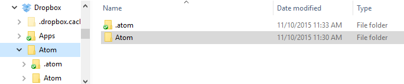

Chapter 1: Getting Started
Chapter 2: Using Atom
- Atom Packages
- Moving in Atom
- Atom Selections
- Editing and Deleting Text
- Find and Replace
- Snippets
- Autocomplete
- Folding
- Panes
- Pending Pane Items
- Grammar
- Version Control in Atom
- GitHub package
- Writing in Atom
- Basic Customization
- Summary
Chapter 3: Hacking Atom
- Tools of the Trade
- The Init File
- Package: Word Count
- Package: Modifying Text
- Package: Active Editor Info
- Creating a Theme
- Creating a Grammar
- Creating a Legacy TextMate Grammar
- Publishing
- Iconography
- Debugging
- Writing specs
- Handling URIs
- Cross-Platform Compatibility
- Converting from TextMate
- Hacking on Atom Core
- Contributing to Official Atom Packages
- Creating a Fork of a Core Package in atom/atom
- Maintaining a Fork of a Core Package in atom/atom
- Summary
Chapter 4: Behind Atom
- Configuration API
- Keymaps In-Depth
- Scoped Settings, Scopes and Scope Descriptors
- Serialization in Atom
- Developing Node Modules
- Interacting With Other Packages Via Services
- Maintaining Your Packages
- How Atom Uses Chromium Snapshots
- Summary
Reference: API
- AtomEnvironment
- BufferedNodeProcess
- BufferedProcess
- Clipboard
- Color
- CommandRegistry
- CompositeDisposable
- Config
- ContextMenuManager
- Cursor
- Decoration
- DeserializerManager
- Directory
- DisplayMarker
- DisplayMarkerLayer
- Disposable
- Dock
- Emitter
- File
- GitRepository
- Grammar
- GrammarRegistry
- Gutter
- HistoryManager
- KeymapManager
- LayerDecoration
- MarkerLayer
- MenuManager
- Notification
- NotificationManager
- Package
- PackageManager
- Pane
- Panel
- PathWatcher
- Point
- Project
- Range
- ScopeDescriptor
- Selection
- StyleManager
- Task
- TextBuffer
- TextEditor
- ThemeManager
- TooltipManager
- ViewRegistry
- Workspace
- WorkspaceCenter
Appendix A: Resources
Appendix B: FAQ
- Is Atom open source?
- What does Atom cost?
- What platforms does Atom run on?
- How can I contribute to Atom?
- Why does Atom collect usage data?
- Atom in the cloud?
- What's the difference between an IDE and an editor?
- How can I tell if subpixel antialiasing is working?
- Why is Atom deleting trailing whitespace? Why is there a newline at the end of the file?
- What does Safe Mode do?
- I have a question about a specific Atom community package. Where is the best place to ask it?
- I’m using an international keyboard and keys that use AltGr or Ctrl+Alt aren’t working
- I’m having a problem with Julia! What do I do?
- I’m getting an error about a “self-signed certificate”. What do I do?
- I’m having a problem with PlatformIO! What do I do?
- How do I make Atom recognize a file with extension X as language Y?
- How do I make the Welcome screen stop showing up?
- How do I preview web page changes automatically?
- How do I accept input from my program or script when using the script package?
- I am unable to update to the latest version of Atom on macOS. How do I fix this?
- I’m trying to change my syntax colors from styles.less, but it isn’t working!
- How do I build or execute code I've written in Atom?
- How do I uninstall Atom on macOS?
- macOS Mojave font rendering change
- Why does macOS say that Atom wants to access my calendar, contacts, photos, etc.?
- How do I turn on line wrap?
- The menu bar disappeared, how do I get it back?
- How do I use a newline in the result of find and replace?
- What is this line on the right in the editor view?
Appendix C: Shadow DOM
Appendix D: Upgrading to 1.0 APIs
Appendix E: Atom server-side APIs
Improve this page
Basic Customization
Now that we are feeling comfortable with just about everything built into Atom, let's look at how to tweak it. Perhaps there is a keybinding that you use a lot but feels wrong or a color that isn't quite right for you. Atom is amazingly flexible, so let's go over some of the simpler flexes it can do.
Configuring with CSON
All of Atom's config files (with the exception of your style sheet and your Init Script) are written in CSON, short for CoffeeScript Object Notation. Just like its namesake JSON, JavaScript Object Notation, CSON is a text format for storing structured data in the form of simple objects made up of key-value pairs.
key:
key: value
key: value
key: [value, value]
Objects are the backbone of any CSON file, and are delineated by indentation (as in the above example). A key's value can either be a String, a Number, an Object, a Boolean, null, or an Array of any of these data types.
Just like the more common JSON, CSON's keys can only be repeated once per object. If there are duplicate keys, then the last usage of that key overwrites all others, as if they weren't there. The same holds true for Atom's config files.
Don't do this:
# Only the second snippet will be loaded
'.source.js':
'console.log':
'prefix': 'log'
'body': 'console.log(${1:"crash"});$2'
'.source.js':
'console.error':
'prefix': 'error'
'body': 'console.error(${1:"crash"});$2'
Use this instead:
# Both snippets will be loaded
'.source.js':
'console.log':
'prefix': 'log'
'body': 'console.log(${1:"crash"});$2'
'console.error':
'prefix': 'error'
'body': 'console.error(${1:"crash"});$2'
Style Tweaks
If you want to apply quick-and-dirty personal styling changes without creating an entire theme that you intend to publish, you can add styles to the styles.less file in your ~/.atom%USERPROFILE%\.atom directory. You can open this file in an editor from the Atom > StylesheetFile > StylesheetEdit > Stylesheet menu.

For example, to change the colors of the Status Bar, you could add the following rule to your styles.less file:
.status-bar {
color: white;
background-color: black;
}
The easiest way to see what classes are available to style is to inspect the DOM manually via the Developer Tools. We'll go over the Developer Tools in great detail in the next chapter, but for now let's take a simple look. You can open the Developer Tools by pressing Alt+Cmd+ICtrl+Shift+I, which will bring up the Chromium Developer Tools panel.

With the Developer Tools, you can inspect all the elements in Atom. If you want to update the style of something, you can figure out what classes it has and add a Less rule to your stylesheet to modify it.
If you are unfamiliar with Less, it is a basic CSS preprocessor that makes some things in CSS a bit easier. You can learn more about it at lesscss.org.
If you prefer to use CSS instead, you can do that in the same styles.less file, since CSS is also valid in Less.
Customizing Keybindings
Atom keymaps work similarly to stylesheets. Just as stylesheets use selectors to apply styles to elements, Atom keymaps use selectors to associate key combinations with events in specific contexts. Here's a small example, excerpted from Atom's built-in keymap:
'atom-text-editor':
'enter': 'editor:newline'
'atom-text-editor[mini] input':
'enter': 'core:confirm'
This keymap defines the meaning of Enter in two different contexts. In a normal editor, pressing Enter triggers the editor:newline command, which causes the editor to insert a newline. But if the same keystroke occurs inside a select list's mini-editor, it instead triggers the core:confirm command based on the binding in the more-specific selector.
By default, keymap.cson is loaded when Atom is started. It will always be loaded last, giving you the chance to override bindings that are defined by Atom's core keymaps or third-party packages. You can open this file in an editor from the Atom > KeymapFile > KeymapEdit > Keymap menu.
You can see all the keybindings that are currently configured in your installation of Atom in the Keybindings tab in the Settings View.
If you run into problems with keybindings, the Keybinding Resolver is a huge help. It can be opened with the Cmd+.Ctrl+. key combination. It will show you what keys Atom saw you press and what command Atom executed because of that combination.
Global Configuration Settings
Atom loads configuration settings from the config.cson file in your ~/.atom%USERPROFILE%\.atom directory.
'*':
'core':
'excludeVcsIgnoredPaths': true
'editor':
'fontSize': 18
The configuration is grouped into global settings under the * key and language-specific settings under scope named keys like .python.source or .html.text. Underneath that, you'll find configuration settings grouped by package name or one of the two core namespaces: core or editor.
You can open this file in an editor from the Atom > ConfigFile > ConfigEdit > Config menu.
Configuration Key Reference
-
core-
customFileTypes: Associations of language scope to file extensions (see Customizing Language Recognition) -
disabledPackages: An array of package names to disable -
excludeVcsIgnoredPaths: Don't search within files specified by.gitignore -
ignoredNames: File names to ignore across all of Atom -
projectHome: The directory where projects are assumed to be located -
themes: An array of theme names to load, in cascading order
-
-
editor-
autoIndent: Enable/disable basic auto-indent (defaults totrue) -
nonWordCharacters: A string of non-word characters to define word boundaries -
fontSize: The editor font size -
fontFamily: The editor font family -
invisibles: A hash of characters Atom will use to render whitespace characters. Keys are whitespace character types, values are rendered characters (use valuefalseto turn off individual whitespace character types)-
tab: Hard tab characters -
cr: Carriage return (for Microsoft-style line endings) -
eol:\ncharacters -
space: Leading and trailing space characters
-
-
lineHeight: Height of editor lines, as a multiplier of font size -
preferredLineLength: Identifies the length of a line (defaults to80) -
showInvisibles: Whether to render placeholders for invisible characters (defaults tofalse) -
showIndentGuide: Show/hide indent indicators within the editor -
showLineNumbers: Show/hide line numbers within the gutter -
softWrap: Enable/disable soft wrapping of text within the editor -
softWrapAtPreferredLineLength: Enable/disable soft line wrapping atpreferredLineLength -
tabLength: Number of spaces within a tab (defaults to2)
-
-
fuzzyFinder-
ignoredNames: Files to ignore only in the fuzzy-finder
-
-
whitespace-
ensureSingleTrailingNewline: Whether to reduce multiple newlines to one at the end of files -
removeTrailingWhitespace: Enable/disable stripping of whitespace at the end of lines (defaults totrue)
-
-
wrap-guide-
columns: Array of hashes with apatternandcolumnkey to match the path of the current editor to a column position.
-
Language Specific Configuration Settings
You can also set several configuration settings differently for different file types. For example, you may want Atom to soft wrap markdown files, have two-space tabs for ruby files, and four-space tabs for python files.
There are several settings now scoped to an editor's language. Here is the current list:
editor.autoIndent
editor.autoIndentOnPaste
editor.invisibles
editor.nonWordCharacters
editor.preferredLineLength
editor.scrollPastEnd
editor.showIndentGuide
editor.showInvisibles
editor.softWrap
editor.softWrapAtPreferredLineLength
editor.softWrapHangingIndent
editor.tabLength
Language-specific Settings in the Settings View
You can edit these config settings in the Settings View on a per-language basis. Click on "Packages" tab in the navigation bar on the left, search for the language of your choice, select it, and edit away!

Language-specific Settings in your Config File
You can also edit the config.cson directly. To open your configuration file via the Command Palette, press Cmd+Shift+PCtrl+Shift+P type open config, and press Enter.
Global settings are under the * key, and each language can have its own top-level key. This key is the language's scope. Language-specific settings take precedence over anything set in the global section for that language only.
'*': # all languages unless overridden
'editor':
'softWrap': false
'tabLength': 8
'.source.gfm': # markdown overrides
'editor':
'softWrap': true
'.source.ruby': # ruby overrides
'editor':
'tabLength': 2
'.source.python': # python overrides
'editor':
'tabLength': 4
Finding a Language's Scope Name
In order to write these overrides effectively, you'll need to know the scope name for the language. We've already done this for finding a scope for writing a snippet in Snippet Format, but we can quickly cover it again.
The scope name is shown in the settings view for each language. Click on "Packages" in the navigation on the left, search for the language of your choice, select it, and you should see the scope name under the language name heading:

Another way to find the scope for a specific language is to open a file of its kind and press Alt+Cmd+Pchoose "Editor: Log Cursor Scope" in the Command Palette to show all scopes for the current position of the cursor. The scope mentioned top most is always the language for this kind of file, the scopes following are specific to the cursor position:

These scopes can be especially useful to style the editor, since they can also be used as class names in your stylesheet.
Customizing Language Recognition
If you want Atom to always recognize certain file types as a specific grammar, you'll need to manually edit your config.cson file. You can open it using the Application: Open Your Config command from the Command Palette. For example, if you wanted to add the foo extension to the CoffeeScript language, you could add this to your configuration file under the *.core section:
'*':
core:
customFileTypes:
'source.coffee': [
'foo'
]
In the example above, source.coffee is the language's scope name (see Finding a Language's Scope Name for more information) and foo is the file extension to match without the period. Adding a period to the beginning of either of these will not work.
Controlling Where Customization is Stored to Simplify Your Workflow
The CSON configuration files for Atom are stored on disk on your machine. The location for this storage is customizable. The default is to use the home directory of the user executing the application. The Atom Home directory will, by default, be called .atom and will be located in the root of the home directory of the user.
Custom home location with an environment variable
An environment variable can be used to make Atom use a different location. This can be useful for several reasons. One of these may be that multiple user accounts on a machine want to use the same Atom Home. The environment variable used to specify an alternate location is called ATOM_HOME. If this environment variable exists, the location specified will be used to load and store Atom settings.
Taking your customization with you with Portable Mode
In addition to using the ATOM_HOME environment variable, Atom can also be set to use "Portable Mode".
Portable Mode is most useful for taking Atom with you, with all your custom setting and packages, from machine to machine. This may take the form of keeping Atom on a USB drive or a cloud storage platform that syncs folders to different machines, like Dropbox. Atom is in Portable Mode when there is a directory named .atom sibling to the directory in which the atom executable file lives. For example, the installed Atom directory can be placed into a Dropbox folder next to a .atom folder.

With such a setup, Atom will use the same Home directory with the same settings for any machine with this directory syncronized/plugged in.
Moving to Portable Mode
Atom provides a command-line parameter option for setting Portable Mode.
atom --portable
Executing atom with the --portable option will take the .atom directory you have in the default location (~/.atom) and copy the relevant contents for your configuration to a new home directory in the Portable Mode location. This enables easily moving from the default location to a portable operation without losing the customization you have already set up.